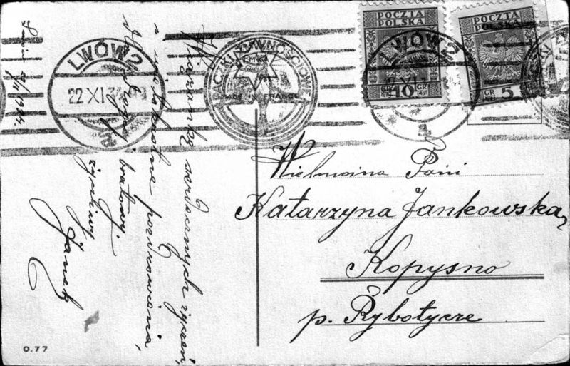

DOKUMENTY RODZINY JANKOWSKICH
Pisma i inne dokumenty Antoniego Jankowskiego związane z pracą w Żandarmerii
Kalendarz CK Żandarmeryi
Dokumenty z innej działalności Antoniego Jankowskiego
Kwit na drewno
Korespondencja (listy, zaproszenia itp.)

Kartka do Katarzyny JankowskiejNotatki
Notatki
Fotografie

Wizytówki
Inne
|
Pokwitowanie za abonament radiowy |
Zarządzenie w sprawie pryszczycy 
Dowód nadania przesyłki pocztowej |
Obrazy malowane przez Michalinę Jankowską
NOTATKI KS. GÓRNICKIEGO (DANE DOTYCZĄCE MIESZKAŃCÓW KOPYSNA)
|
Dokumenty zawierające wykaz niektórych
mieszkańców Kopysna (Nr domów 8, 10, 11, 32, 38, ?, 88 i folwarku Jankowskich; nazwiska i imiona; daty urodzin). Na końcu wykazu podpis sporządzającego ks. Józefa Górnickiego |
||
|
Nagrobek ks. Józef Górnickiego znajdujący się na cmentarzu katolickim w miejscowości Rybotycze |
DOKUMENTY JÓZEFA KRUPY (s. Mikołaja i Antoniny Mandro)
DOKUMENTY ZWIĄZANE Z WYSIEDLENIEM NA WSCHÓD (1945)
DOKUMENTY JÓZEFA KULHAWCA (s. Andrzeja i Anastazji Kaczmar)
DOKUMENTY ZWIĄZANE Z AKCJĄ "WISŁA"

Inne
Odznaka sołtysa za czasów PRL,
taką posiadał Mikołaj Nienadowski

|
|
Dokumenty z dnia 20 kwietnia 1961 r. wystawione właścicielowi zwierząt (koń, 3 szt. bydła, pies, świnia, 14 kur, 4 kaczki) Mikołajowi Nienadowskiemu, który zabrał je ze sobą i przewiózł koleją do Przemyśla a następnie do Kopysna, gdzie powrócił z wysiedlenia. |